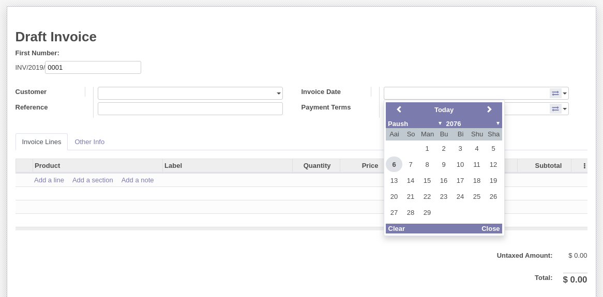
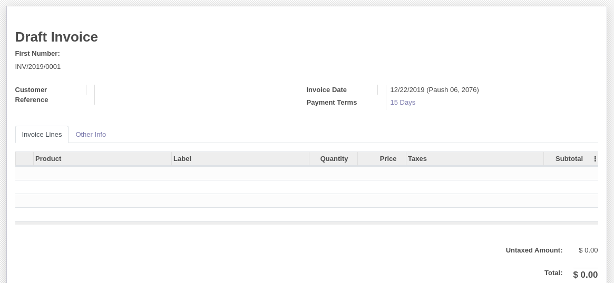
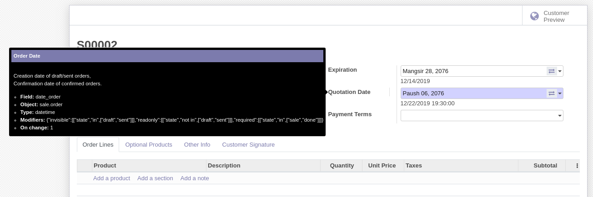
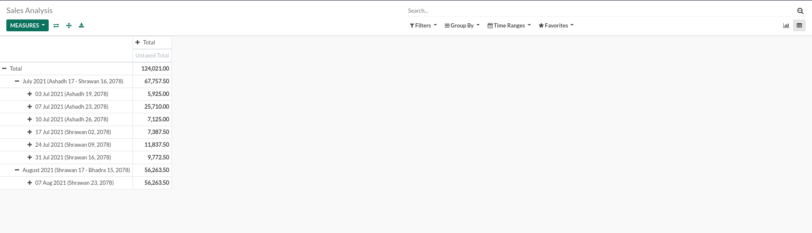

Nepali Date System
Easy integration of Nepali date in Odoo.
Editable Form
Readonly Form
List View
Search View
Supports both date and datetime fields
Datepicker everywhere across the system
Date conversion in reports
Qweb Reports

Pivot Reports
Excel Sheet Reports
Configurable from settings
Adapts backend theme color
Customizable using scss variables
Toggle between A.D. and B.S. datepickers